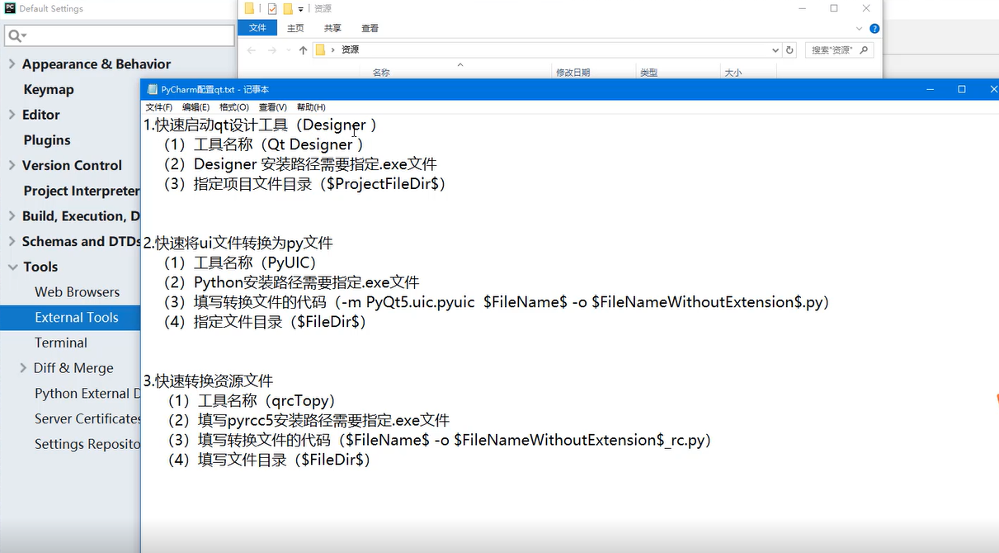

Contents
22.1.3. Qt框架初探¶
安装PyQt¶
Qt 是python 开发窗体的工具之一， 它不仅与python 有着良好的兼容性， 还可以通过可视化拖 拽的方式进行窗体的创建， 提高开发人员的开发效率， 因此受到开发人员的喜爱。Qt 工具分别支持 Windows 、Linux 、Mac OS X 三种操作系统， 读者在https://wmv.qt.io/download 官方网站中下载对应的 系统版本即可。
Qt 工具安装完成以后， 还需要在Python 中安装巧， Q 巧模块。PyQt5 模块有两种安装方式， 一种是直接在PyQt5 的官方网站(https://wmv.nverbankcomputmg.com ） 中下载最新的源码进行编译安装， 另一种是使用pip install 的方式进行在线安装， 使用pip install pyqt5 的安装方式
pip install pyqt5
使用第三方开发工具¶
安装PyQt5-5.6-gpl-Py3.5-Qt5.6.0-x64-2.exe工具
- 设置pychrm的开发环境，外部工具 
1 ， 快速启动qt 设计工具(Designer）
（ 1 ） 工具名称（Qt Designer ）
（ 2 ） Designer安装路径需要指定.exe文件
（ 3 ） 指定顶目文件目录($ProjectFileDir$)
2 ． 快速将ui文件转换为py文件
（ 1 〕工具名称(PyUIC）
（ 2 ） Python安装路径需要指定.exe文件
（ 3 ） 壇写转换文件的代码(-m PyQt5.uic.pyuic $FileName$ -o $FileNameWithoutExtension$.py)
（ 4 ） 指定文件目录($FiIeDir$)
3 ． 快速转换资源文件
（ 1 〕工具名称(qrcTopy)
（ 2 〕壇与pyrcc5 安装路径需要指定.exe文件
（ 3 ） 壇写转换文件的代码($FileName$ -o $FileNameWithoutExtension$_rc.py)
（ 4 ） 壇写文件目录($FiIeDir$)
- 使用Qt Designer工具生成的py文件运行不会生成GUI界面，必须使用如下的方式，实例化调用才生效

import sys
def show_MainWinow():
app = QtWidgets.QApplication(sys.argv) # 创建一个QApplication，也就是你要开发的软件app
MainWindow = QtWidgets.QMainWindow() # 创建一个QMainWindow，用来装载你需要的各种组件、控件
ui = Ui_MainWindow() # ui是Ui_MainWindow()类的实例化对象
ui.setupUi(MainWindow) # 执行类中的setupUi方法，方法的参数是第二步中创建的QMainWindow
MainWindow.show() # 执行QMainWindow的show()方法，显示这个QMainWindow
sys.exit(app.exec_()) # 退出窗体主循环
if __name__ == "__main__":
show_MainWinow()


Qt设计工具信号与槽的关联¶


clicked()为按钮的信号，,单击窗体中的按钮时发射clicked信号， 该信号被主窗体的槽函数（方法）close()所捕获，并触发关闭主窗体的行为。
关键代码如下：
self.pushButton.clicked.connect(MainWindow.close)